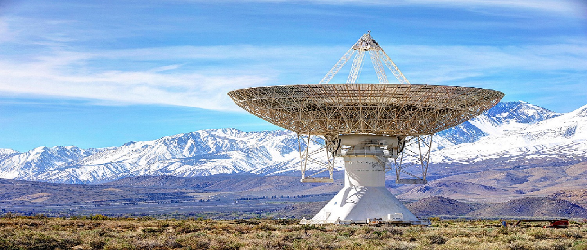
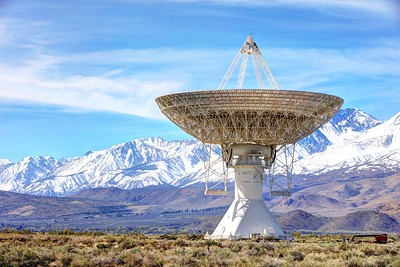
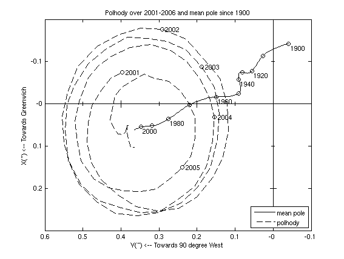

History of VLBI
In the 1930s, engineer Karl Jansky discovered that celestial objects emit radio waves when he tried to locate radio interference. Using a large antenna, he determined Earthly sources of radio waves, yet remained puzzled by unidentied sources. After comparing the signal to astronomical charts, Jansky realized the radio waves were “star noise,” coming from the constellation of Sagittarius - 25,640 light years away from Earth.
 Following Jansky’s discovery, researchers raced to build dish-shaped radio telescopes. Unlike tubular optical telescopes, radio telescopes cradle an antenna in a large parabolic dish, designed to channel radio waves from very specic directions—a distant galaxy, for instance. The rst dish measured only 9 meters (30 feet) across. To detect more distant celestial objects, however, dishes needed to be much larger. Many radio telescope dishes are now 25 to 100 meters (82 to 328 feet) across. “The larger dishes are more sensitive, and used more for the faint sources,” said NASA geodesist Dirk Behrend. Now hundreds of radio telescopes across Earth’s surface tilt skyward, capturing
- Formation in mid 1960s
- Development
Orentiation of Earth
Earth is not perfectly round; it wobbles, spinning at a slightly irregular rate. Geodesists, researchers who study Earth’s shape, movement, and orientation in space, help us get where we want. Accurately accounting for an imperfect Earth means the next time you use GPS, you will locate the correct restaurant or nd your way out of a remote canyon.
VLBI include measuring the rate of tectonic spreading between North America and Europe, as well as tracking tectonic deformation along the San Andreas fault in the southwestern US. The VLBI technique has also measured earthquake motion in Alaska, California, Hawaii, Chile, and Japan. Researchers continue to rely on VLBI and the ICRF to study tectonic activity, sea level rise, interactions between Earth’s core and mantle, and post-glacial land rebound and subsidence.
UT1 is related to the Greenwich mean sidereal time (GMST) by a conventional relationship (Aoki et al., 1982) ; it gives access to the direction of the ITRF zero-meridian in the ICRS, reckoned around the CEP axis. It is expressed as the difference UT1-TAI or UT1-UTC.TAI is the atomic time scale of BIPM ; its unit interval is exactly one SI second at sea level. The origin of TAI is such that UT1-TAI ~ 0 on 1958 January 1. The instability of TAI is about 6 orders of magnitude smaller than that of UT1. The Terrestrial Time TT is presently defined as TAI + 32.184s. Quarterly values of UT1-TAI since 1962 and predicted ones are given.The difference between the astronomically determined duration of the day and 86400 SI seconds is also called length of day (LOD). The relationship of the angular velocity of the earth Omega with LOD iOmega = 72 921 151.467064 - 0.843994809 LOD, where Omega is in picoradians/s and LOD in millisecondThe variations over the recent years of UT1-TAI and in LOD are shown.Universal time and length of day are subject to variations due to the zonal tides (smaller than 2.5 ms in absolute value), to oceanic tides (smaller than 0.03 ms in absolute value), to atmospheric circulation, to internal effects and to transfer of angular momentum to the Moon orbital motion.
Celestial Reference Frame
The celestial reference frame is defined by VLBI. According to NASA,” The International Astronomical Union has adopted over 3400 extragalactic radio sources (mostly quasars) used by VLBI as the defining objects of the celestial reference frame. Extragalactic objects form a true inertial reference frame because they are at such great distances that their motions across the sky are undetectable. Positions of stars in our galaxy are now tied to this reference frame, and this is the same reference frame used for measuring Earth orientation.” VLBI is unique in its ability to make rapid, accurate measurements of the orientation of the terrestrial reference frame with respect to the celestial reference frame.
Celestial reference frames have been used for millennia for purposes of measuring the passage of time, for navigation, and for studying the dynamics of the solar system. In the last century, these frames have become more important to both the study of the dynamics of more distant objects and the study of geophysical phenomena on Earth. Using optical telescopes, reference frames with roughly 0 1 accuracy were produced. With the advent of the technique of very long baseline interferometry (VLBI), rapid improvements in positional accuracy became possible, reaching the milliarcsecond level.
To keep up with Earth’s constant change, from its rotation to its tectonic movement, researchers have created terrestrial and celestial frameworks of carefully observed reference points to triangulate positions accurately. These points help form reference frames that go beyond locating Earth in space, they reveal Earth’s tiny shifts caused by earthquakes and land rebounds after ice sheets melt. Such minute changes can only be observed if Earth’s motion is precisely measured.
Imaging of M87*
The matters near the event horizon of the blackwhole gets heated up to millions of degrees of temperature emitting radio waves and x-rays. This type of telescopes were installed in various eight part of Earth,collectively forming a telescope known as Event Horizon Telescope. These telescopes were synchronized with atomic clock which were turned on at same time pointed towards M87*. These telescopes received and collected the radio waves emitted from the black whole. After the data were collected in laboratories special algorithm inbuilt in the super computers rendered the image we have now.
Criteria for Telescope Installation
As mentioned earlier,we recieve 99.9% unwanted radio signals,more because of the cell phones used by us today.Thus selection of the site should is necessary as well
- Alone and Silent Area.For eg:Antartica,Deserts
Challenges On VLBI
Multiple properties determine how accurate thee geodetic parameters can be estimated, one of which is the geometry of the VLBI telescope network. For example, long baselines with east–west orientation are necessary for a precise measurement of the Earth rotation angle defined as the difference dUT1 between Universal Time (UT1) and Coordinated Universal Time (UTC). On the other hand, for a precise measurement of polar motion, long baselines with north–south orientation are beneficial (Dermanis and Mueller 1978). Although longer baselines lead to higher precision of Earth orientation parameters (EOP) theoretically, the selection of observations between telescopes forming a long baseline is significantly more difficult. The reason is that the commonly visible sky of these stations is very limited, which is diminishing the accuracy level again. Since different requirements exist for different geodetic parameters, it is a challenging task to define a good VLBI network for geodetic observations.
Radio waves weaken gradually as they travel the great distance to Earth. In fact, when arrived on earth, they are millions of times weaker than the radio signals by the cell-phones we use today.
99.9 % of the received and recorded radio signals are other than targeted ones. It is impossible to receive only our targets, because there are so much other radio waves emitted from different kinds of objects in nature .
The performance of a radio telescope is limited by various factors. The accuracy of a reflecting surface may depart from the ideal shape because of manufacturing irregularities. Wind load can exert force on the telescope. Thermal deformations cause differential expansion and contraction. As the antenna is pointed to different parts of the sky, deflections occur due to changes in gravitational forces.